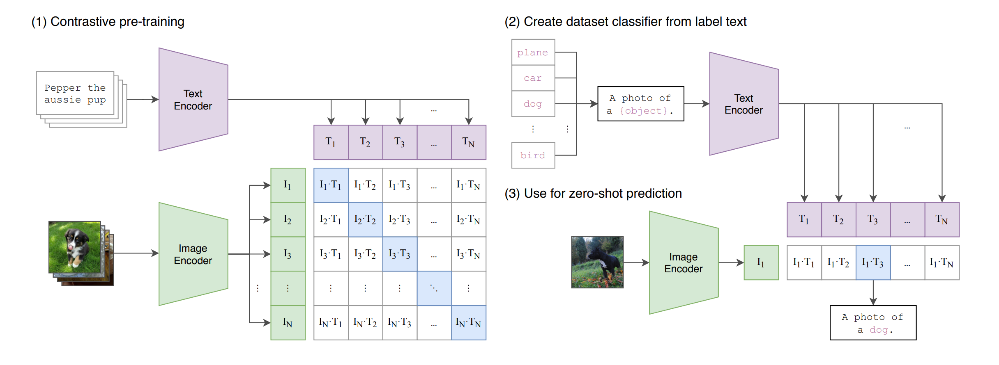
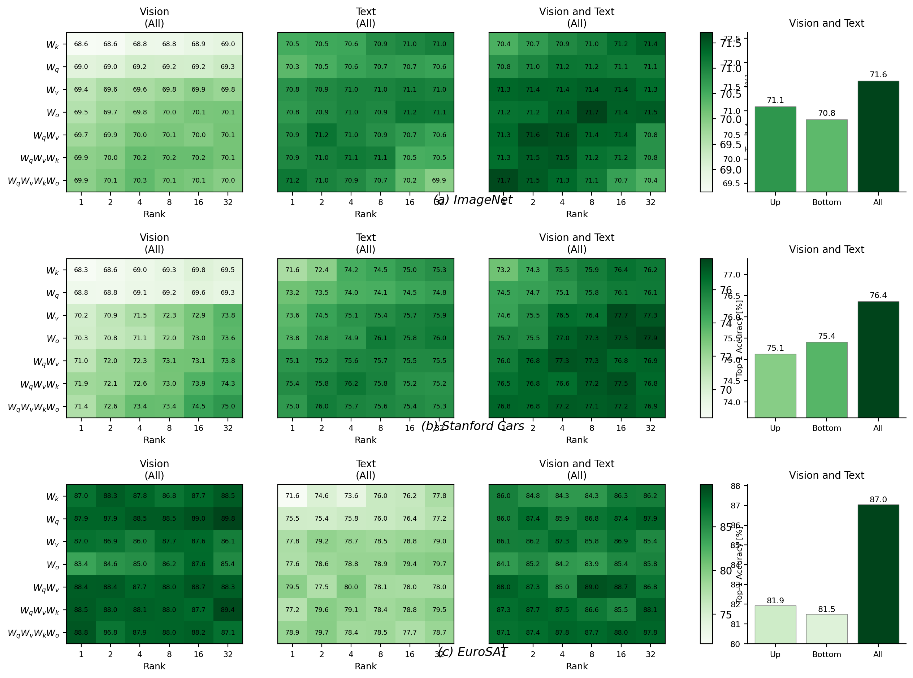

Understanding, reproducing, and extending CLIP-LoRA — adapting CLIP from just a handful of labelled images.
The vision–language model we adapt — how it's trained and how zero-shot classification works.
Low-rank adapters inside CLIP's attention blocks — the design choices and why they work.
Setup, scope, results so far (in progress), and the challenges we hit.
A regularization term that anchors the adapted model to zero-shot CLIP — motivation & plan.
Vision–language models like CLIP are pre-trained once on hundreds of millions of image–text pairs. To use one on your task you only have a handful of labelled images — the few-shot regime.
The question this paper answers: what is the cheapest, most effective way to specialise CLIP from 1–16 examples per class — without fine-tuning the whole network or running slow prompt-optimization?
Millions of weights, easy to overfit on a few shots, heavy to store per task.
Methods like PLOT++ need many hours of optimization per task.
Train tiny low-rank matrices inside attention — minutes, not hours.
The foundation model we're adapting — how it learns to connect images and language.
Matched image–text pairs land close together — that proximity is the prediction signal.

For a batch of N image–text pairs, CLIP computes all N × N cosine similarities. The training objective pulls each image toward its own caption and pushes it away from the other N−1.
A symmetric cross-entropy loss over rows and columns maximises the diagonal (correct pairs) of the similarity matrix.
Strong out of the box — but on fine-grained tasks (aircraft types, satellite terrain) zero-shot alone isn't enough. That's where few-shot adaptation comes in.
From low-rank adapters to a fast, fixed recipe for few-shot adaptation.
Learn continuous prompt tokens fed to the text encoder — CoOp, CoCoOp, PLOT++, KgCoOp, ProGrad, MaPLe.
Cost: back-propagation through the text encoder ⇒ slow (hours).
Bolt lightweight layers onto frozen features — CLIP-Adapter, Tip-Adapter-F, TaskRes.
Limit: often touch only one modality; method-specific tuning.
A third path. Inject low-rank adapters directly into the attention weights of both encoders. One fixed recipe, no per-task tuning, trains in minutes.
Instead of updating a weight matrix W, LoRA freezes it and learns a low-rank update ΔW = B A, where B and A are skinny matrices of rank r ≪ d.
Inside each self-attention block, the query / key / value projections are the levers. CLIP-LoRA attaches a low-rank update to Wq, Wk, Wv:
| Hyper-parameter | Value |
|---|---|
| Rank r | 2 |
| Target matrices | Wq, Wk, Wv |
| Encoders | vision + text |
| Placement | all layers |
| Dropout p | 0.25 |
| Learning rate | 2e-4 |
| Scheduler | cosine |
| Batch size | 32 |
| Iterations | 500 × shots |
| Prompt | “a photo of a [class]” |
The strength of the method is its simplicity: no per-dataset hyper-parameter search, no validation-set tricks. The same ten settings run everywhere.
tiny rank
fits one GPU
Results are averaged over 3 random seeds (1, 2, 3) — the convention we follow exactly in our reproduction.
| Method | Train time |
|---|---|
| PLOT++ | 15 h 30 |
| ProGrad | 3 h 20 |
| CoOp | 2 h 00 |
| CLIP-LoRA | 50 min |
Takeaway: a generic, well-understood NLP/LLM technique — LoRA — transfers cleanly to vision–language adaptation and beats specialised methods on speed.
Our setup, what we reproduced, the results — and the challenges along the way.
Forked MaxZanella/CLIP-LoRA and reproduced the default configuration faithfully.
Every experiment averaged over three seeds, exactly as the paper reports.
Runs sized to fit a single GPU; currently running on an NVIDIA A40 (48 GB).
Every run logs dataset, backbone, shots, seed, rank, targets, encoder, placement, dropout, accuracy, status into a single clip_lora_results.csv.
CLIP-LoRA across 10 datasets × shots {1,2,4,8,16} × 3 seeds.
Rank × attention-matrix set × encoder choice, plus placement — on ImageNet, StanfordCars, EuroSAT at 4-shot.
Two of us run backbones in parallel; Fig.3 jobs split round-robin so rank/dataset load is balanced.
Full grid for 10 of the paper's 11 datasets; SUN397 dropped (dead URL / parquet-only mirror).
Each backbone is presented on its own slide next — every reproduced average lands within ≈0.3% of the paper across all shot counts and 10 datasets (SUN397 excluded).
| Shots | ImgNet | Airc | Euro | Cars | Food | Pets | Flwr | Calt | DTD | UCF | Avg |
|---|---|---|---|---|---|---|---|---|---|---|---|
| 1 | 70.470.4 | 29.830.2 | 71.172.3 | 69.870.1 | 84.784.3 | 91.992.3 | 82.383.2 | 93.993.7 | 54.054.3 | 76.076.3 | 72.472.7-0.3 |
| 2 | 70.870.8 | 32.633.2 | 82.082.7 | 73.473.2 | 83.383.2 | 90.791.3 | 89.889.8 | 94.894.6 | 59.959.9 | 80.180.0 | 75.775.9-0.1 |
| 4 | 71.571.4 | 38.037.9 | 85.384.9 | 77.177.4 | 83.082.7 | 90.591.0 | 93.393.7 | 95.095.2 | 63.763.8 | 81.181.1 | 77.877.9-0.1 |
| 8 | 72.472.3 | 45.445.7 | 89.189.7 | 82.182.1 | 83.183.1 | 91.391.7 | 96.196.3 | 95.795.6 | 67.567.5 | 84.084.1 | 80.780.8-0.1 |
| 16 | 73.673.6 | 54.954.7 | 92.392.1 | 86.386.3 | 84.184.2 | 92.392.4 | 97.998.0 | 96.296.4 | 71.872.0 | 86.486.7 | 83.683.6-0.0 |
Top-1 accuracy (%), 3-seed avg (seeds 1·2·3) · paper = Zanella & Ben Ayed (2024), Table 3 · averages over the 10 datasets we ran (SUN397 excluded)
| Shots | ImgNet | Airc | Euro | Cars | Food | Pets | Flwr | Calt | DTD | UCF | Avg |
|---|---|---|---|---|---|---|---|---|---|---|---|
| 1 | 65.365.2 | 22.922.9 | 67.967.1 | 63.663.5 | 78.578.4 | 88.088.7 | 77.577.4 | 93.093.0 | 49.549.8 | 72.272.3 | 67.867.8+0.0 |
| 2 | 65.765.7 | 23.624.1 | 80.780.8 | 64.664.8 | 76.576.3 | 86.886.6 | 84.284.7 | 93.993.7 | 57.557.4 | 75.475.4 | 70.971.0-0.0 |
| 4 | 66.566.5 | 28.327.7 | 84.485.6 | 68.568.3 | 76.075.6 | 86.386.3 | 90.290.1 | 94.294.3 | 60.860.3 | 76.076.5 | 73.173.1+0.0 |
| 8 | 67.267.2 | 35.736.1 | 89.188.8 | 74.674.4 | 76.876.7 | 88.287.7 | 92.792.4 | 94.494.8 | 63.763.7 | 80.280.1 | 76.276.2+0.1 |
| 16 | 68.468.4 | 46.144.9 | 91.991.8 | 79.979.7 | 78.178.2 | 89.088.8 | 96.096.2 | 95.395.2 | 69.068.2 | 82.282.8 | 79.679.4+0.2 |
Top-1 accuracy (%), 3-seed avg (seeds 1·2·3) · paper = Zanella & Ben Ayed (2024), Table 4 · averages over the 10 datasets we ran (SUN397 excluded)
| Shots | ImgNet | Airc | Euro | Cars | Food | Pets | Flwr | Calt | DTD | UCF | Avg |
|---|---|---|---|---|---|---|---|---|---|---|---|
| 1 | 77.076.7 | 41.541.2 | 72.073.7 | 81.280.7 | 90.390.5 | 94.394.2 | 90.891.2 | 95.795.7 | 61.061.2 | 83.082.4 | 78.778.8-0.1 |
| 2 | 77.477.3 | 43.242.4 | 85.785.9 | 82.782.3 | 89.989.8 | 93.893.2 | 95.194.7 | 96.996.8 | 67.467.3 | 84.884.2 | 81.781.4+0.3 |
| 4 | 78.177.9 | 50.048.9 | 85.486.4 | 85.385.2 | 89.889.6 | 94.193.9 | 97.397.4 | 97.197.2 | 70.270.4 | 86.686.4 | 83.483.3+0.1 |
| 8 | 78.778.5 | 57.957.5 | 89.590.0 | 88.888.7 | 89.589.7 | 94.194.2 | 98.398.0 | 97.097.0 | 72.772.2 | 88.788.3 | 85.585.4+0.1 |
| 16 | 79.779.6 | 66.366.2 | 93.093.1 | 91.090.9 | 90.089.9 | 94.794.3 | 99.199.0 | 97.297.3 | 76.876.5 | 90.389.9 | 87.887.7+0.2 |
Top-1 accuracy (%), 3-seed avg (seeds 1·2·3) · paper = Zanella & Ben Ayed (2024), Table 5 · averages over the 10 datasets we ran (SUN397 excluded)

4-shot · top-1 accuracy (%) · our reproduction of the paper's Figure 3 · flat across rank ⇒ default r=2 · QKV ≈ best matrix set · both encoders & all layers win
Caltech101, StanfordCars, SUN397 & EuroSAT original links return 404 / 403 / 500. Re-sourced via Caltech Data, Kaggle, HuggingFace, Zenodo.
The HF mirror ships 100k+ images inside 93 parquet files — needs a custom extraction script before torchvision can read raw JPEGs.
Manual login + download of train/val/devkit (~138 GB train alone). The single heaviest item to fetch and extract.
Volta (sm_70) lacked a kernel in newer PyTorch wheels → resolved by moving the runs to an A40 with a matching CUDA build.
float() on a 1-D array crashed cls_acc(). Fixed by switching to .item().
150 runs per backbone table + ~387 ablation runs (~275 GPU-h total). Solved with a failure-tolerant runner and round-robin job splitting.
Anchoring the adapted model to zero-shot CLIP with a regularization term.
Problem. CLIP-LoRA trains with plain cross-entropy. With only a few shots, nothing stops the adapters from drifting away from CLIP's strong pretrained priors — a likely cause of weaker results on fine-grained sets like Food101.
Idea. Add a term that anchors the adapted output distribution to the frozen zero-shot CLIP — a knowledge-distillation regularizer.
KL is over class probability distributions — not weight tensors.
{Food101, OxfordPets, EuroSAT} × shots {1,4,16} × λ {0.1, 0.3, 1.0} × T {4, 8}, seed 1.
The only setting that helps broadly without hurting the EuroSAT control; higher λ over-regularizes weak-zero-shot datasets.
Re-ran the full Table-3 grid with KL on at λ=0.1, T=8 — 10 datasets × shots {1,2,4,8,16} × 3 seeds.
Same grid as Table 3, so every (dataset, shot) is a direct baseline comparison.
KL (λ=0.1, T=8) vs CE-only baseline · per dataset, shots 1 / 4 / 16 (Δ = accuracy points)
The fine-grained failure case we predicted — biggest recovery.
Consistent gains across shots.
Helps even on the control dataset.
Clear gains at 4 & 16 shots.
Takeaway: anchoring to the frozen zero-shot prior recovers accuracy exactly where CE-only LoRA drifts, with little cost elsewhere — mostly neutral, only two small regressions (Flowers-1shot −1.0, FGVC-4shot −1.0). Confirms the hypothesis.
CLIP-LoRA = low-rank adapters on Wq/Wk/Wv in both encoders; one fixed recipe, strong few-shot accuracy.
Tables 3/4/5 (10 datasets, 3 seeds) + Figure 3 reproduced; averages within few-shot variance of the paper.
KL to zero-shot CLIP (λ=0.1, T=8): mean +0.49 over 30 cells, biggest gains on Food101/DTD.
Zanella & Ben Ayed (2024) — Low-Rank Few-Shot Adaptation of Vision-Language Models. arXiv:2405.18541
Radford et al. (2021) — Learning Transferable Visual Models From Natural Language Supervision (CLIP). arXiv:2103.00020
Base: github.com/MaxZanella/CLIP-LoRA
Our repository: github.com/bnkglu/tuw-dl4nlp-2026s